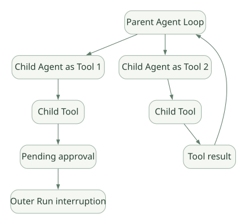

SECOND STUDY / 협업과 제어권
협업과 제어권
이번 단원의 읽는 관점
Handoff와 Agent as Tool의 제어권·History·중첩 승인 전파를 비교합니다.
살펴볼 경계중첩 승인은 최상위 RunState와 최초 Starting Agent로 재개하는 조건을 보세요.
이 페이지의 세부 목차
Part V. Multi-Agent 및 오케스트레이션
22. Handoff와 Agent as Tool은 근본적으로 다르다#
| 질문 | Handoff | Agent.as_tool() |
|---|---|---|
| 현재 대화의 소유 Agent | 대상 Agent로 전환 | 부모 Agent가 유지 |
| 별도 Agent Loop | 대상 Agent로 이어감 | 중첩 Run이 실행될 수 있음 |
| 결과의 귀속 | 대상 Agent가 사용자 최종 결과 생성 가능 | 자식 결과가 부모의 Tool Output이 됨 |
| 입력 맥락 | Handoff history 필터·매퍼로 관리 | 자식 Tool 입력·Context/이력 정책으로 관리 |
| 승인 중단 | 같은 Run의 현재 단계에서 발생 | 중첩 승인도 외부 Run에 전파 가능 |
| 병렬화 | 자체적으로 병렬 실행의 뜻은 아님 | 부모가 여러 자식 Tool을 실행하도록 설계 가능 |
Handoff는 '담당자를 바꾸는 것', Agent as Tool은 '전문가에게 질문하고 다시 돌아오는 것'에 가깝다. [DOC: D06, D07]
23. Handoff 내부 코드와 역사(History) 관리#
핵심 추적 경로:
Agent.handoffs
→ turn_preparation.get_handoffs
→ LLM에 Handoff가 호출 가능한 Tool로 노출
→ turn_resolution.process_model_response
→ is_handoff_tool_call
→ execute_handoffs
→ NextStepHandoff
→ 새 Agent의 다음 모델 Turn[SRC: S03] is_handoff_tool_call은 모델 출력이 Handoff로 등록된 맨몸(bare) Tool 이름에 해당하는지를 확인한다. 일반 Function Tool과 Handoff는 겉으로는 모두 모델의 Tool Call 형식일 수 있지만, Runner가 해석하는 다음 단계는 다르다.
23.1 input_filter를 왜 따로 제공할까?#
보통 Handoff 대상에게는 기존 대화와 도구 결과가 전달되지만, 필요하지 않은 기록을 줄이거나 민감 정보를 숨기기 위해 필터를 사용할 수 있다. 그러나 Structured Tool Items를 제거했다고 해서 일반 텍스트 메시지에 복사된 민감 정보까지 자동 삭제되는 것은 아니다. [DOC: D07]
23.2 모델 생성 Handoff Metadata vs 앱 Context#
handoff(input_type=...)를 통해 모델이 생성한 이유·우선순위 등 작은 Metadata를 수신할 수 있지만, 이것이 기존 Python RunContextWrapper.context를 대체하거나 대상 Agent를 동적으로 자동 선택하는 기능은 아니다. 어떤 Agent로 넘길지 이미 정의된 Handoff의 선택과 분리해야 한다. [DOC: D07]
23.3 Handoff와 Guardrail의 적용 범위#
Input Guardrail은 첫 Agent, Output Guardrail은 최종 출력 Agent라는 경계가 있다. Handoff 시 모든 중간 Agent가 동일한 Guardrail로 재검사된다고 가정하면 안 된다. 각 Agent 및 Tool에 실제 필요한 검증을 배치해야 한다. [DOC: D04, D07]
24. 중첩 Agent.as_tool() 실행과 승인 전파#
일반 Function Tool처럼 보이지만 내부적으로 자식 Agent가 별도 Run을 수행할 수 있다는 점이 핵심이다.
가로로 이동해서 읽을 수 있습니다. 도식 크게 보기 ↗

원문의 학습용 도식입니다. 연결 방향·분기 조건·점선·쌍방향 연결을 보존해 세로로 배치했습니다. 실제 구현·의사코드·해석의 구분은 본문을 함께 읽으세요.
도식 원문 보기 (Mermaid)
flowchart TB
P[Parent Agent Loop] --> C1[Child Agent as Tool 1]
P --> C2[Child Agent as Tool 2]
C1 --> T1[Child Tool]
C2 --> T2[Child Tool]
T1 --> PA[Pending approval]
T2 --> R2[Tool result]
PA --> PS[Outer Run interruption]
R2 --> P공식 HITL 문서는 Nested Agent.as_tool() 내부 Tool의 승인 필요도 바깥 Run에 전달될 수 있으며, 부모 최상위 RunState에서 승인하고 최초 Starting Agent를 사용해 재개해야 한다고 설명한다. [DOC: D03]
이 동작은 단순히 await Runner.run(child)하고 문자열을 돌려주는 것보다 복잡하다. 상태·승인·결과의 소유권이 부모와 자식 사이에 연결되어야 한다.
25. Agent 협업을 위한 세 가지 방식과 선택 기준#
- Handoff 기반: 최종 응답 책임을 특정 Agent에게 넘길 때.
- Agent-as-Tool: 부모가 여러 전문가를 호출하고 결과를 통합할 때.
- Python Workflow 기반: 순서·조건·병렬·비용 정책이 고정적이어서 LLM에게 결정을 맡길 필요가 적을 때.
OpenAI Agents SDK의 Runner가 모든 다단계 업무의 완전한 DAG 스케줄러를 자동 제공한다는 뜻은 아니다. 명시적인 장기 Workflow나 작업 큐는 사용자 애플리케이션 또는 별도 오케스트레이터로 설계할 수 있다.
25.1 모델이 위임할지 결정하는 것과 프로그램이 결정하는 것#
- LLM 기반 위임: 유연성은 좋으나 호출 경로, 지연, 비용 변동성이 커질 수 있다.
- 코드 기반 위임: 실행 경로가 예측 가능하고 로깅·검증이 쉽지만 상황별 적응력은 제한될 수 있다.
- 혼합형: 고정된 단계 사이의 판단만 Agent에게 맡김.
설계자의 질문: 다른 Agent를 부르는 이유가 단지 다른 지시문 때문인지, 권한·모델·컨텍스트를 격리할 실질적인 목적이 있는지 먼저 판단해야 한다.